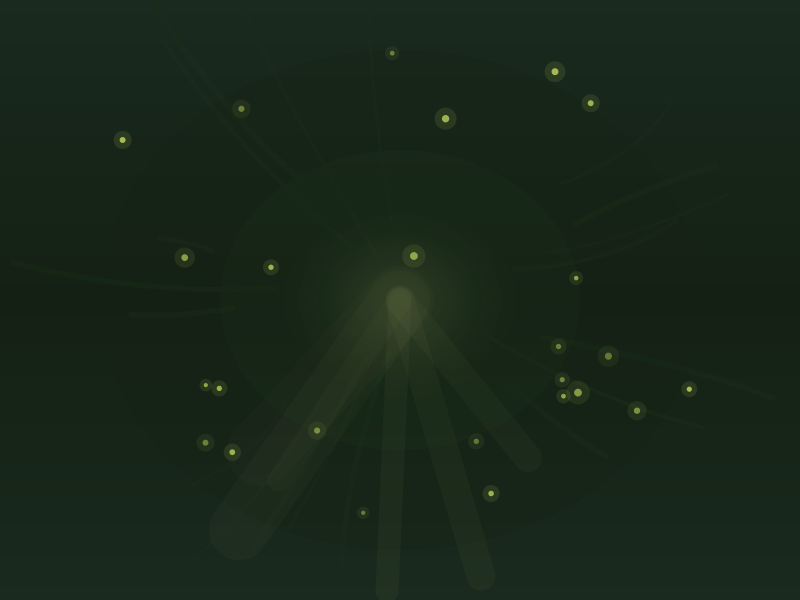
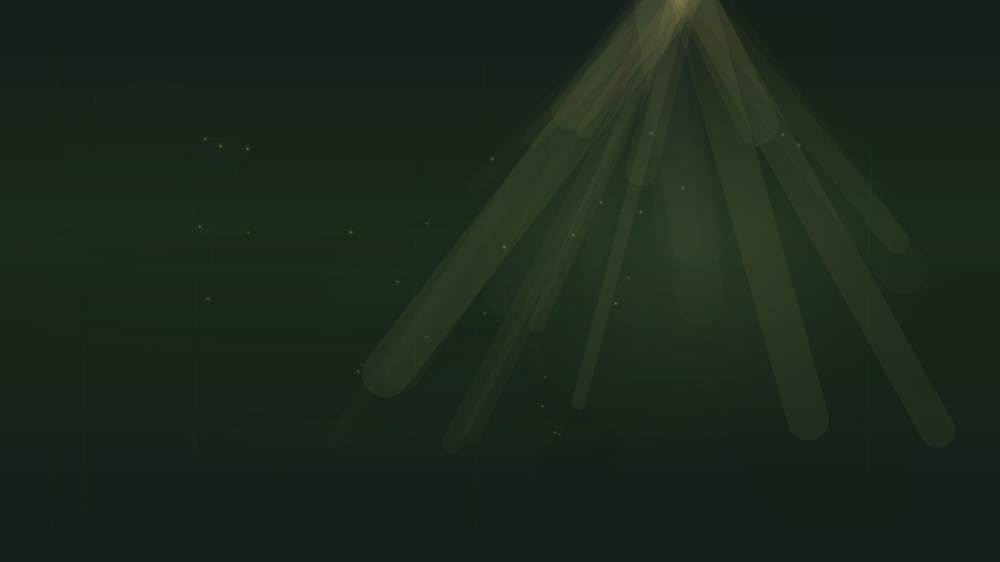

Why We Get Stuck

Your brain is efficient. It builds mental highways — fast, automatic routes for getting through the day. These are useful: you don’t want to rethink how to make coffee every morning. But that same efficiency has a cost. Over time, the highways become the only routes. Unusual connections stop firing. Novel perspectives get filtered out. And something subtler happens: the world loses its shimmer. A sunset is just a sunset. A new idea is just another item on a list. The capacity for awe — the feeling that made you curious in the first place — gets optimized away.
Neuroscientists describe this as the dominance of the default mode network (DMN) — the brain’s autopilot. It handles routine cognition, self-referential thinking, and prediction. It’s brilliant at keeping you functional. But it’s terrible at surprise. At novelty. At the kind of sideways, unexpected connection that defines creative insight.
Creative blocks, cognitive rigidity, and the loss of wonder are neurologically intertwined. An over-optimized brain doesn’t just stop generating new ideas — it stops being moved by the world. Numbness isn’t only a symptom of depression. It’s what happens when the brain’s prediction engine gets so good that nothing surprises it anymore. The fog isn’t placed over your eyes — it’s the natural consequence of a mind that has stopped expecting to be amazed.
How Psychedelics Lift the Veil
Research suggests psychedelics work by temporarily disrupting the default mode network and increasing connectivity between brain regions that don’t normally communicate. Neuroscientists call this increased “entropy” — a state of greater randomness and flexibility in neural signaling. The usual hierarchies relax. The familiar highways quiet. And suddenly, you can see the landscape whole. Users and researchers both describe a signature effect: the restoration of awe. Things that had become routine — music, nature, faces, ideas — suddenly feel saturated with meaning again, like color returning to a forest after the first rain.

Canopy opening — new lightIn practical terms, this manifests as what researchers and users describe in remarkably similar ways: unusual associations between ideas, the ability to see familiar problems from entirely new angles, a loosening of assumptions you didn’t realize you held, enhanced pattern recognition, and a sense that the boundaries between categories — between disciplines, between self and work, between the problem and the solution — have become more porous.
“Psychedelics appear to flatten the brain’s ‘energy landscape,’ making it easier for cognition to move between states rather than getting trapped in attractors.”— Cognitive flexibility research, Imperial College London
What the Research Shows About Creativity
Divergent Thinking
Several studies have found that psychedelics — particularly psilocybin — can enhance divergent thinking: the ability to generate multiple solutions to an open-ended problem. One 2018 study found increased divergent thinking in the days following a psilocybin experience, even after the acute effects had fully worn off. The key insight is that the creative benefit may not be during the experience itself, but in the “afterglow” period — when the jungle is still more open, the veil not yet fully resettled.
Convergent Thinking
The picture is more nuanced for convergent thinking — the ability to arrive at a single correct answer. During the acute psychedelic experience, convergent thinking often decreases. The brain is too open, too fluid, to narrow down. But in the days after, some studies show improvements. The metaphor: you can’t map the jungle while the mist is lifting, but once it clears, you see the terrain with new precision.
Problem-Solving and Insight
Reports from Silicon Valley and creative industries have driven enormous interest in psychedelics for problem-solving. While rigorous controlled studies are still limited, survey data from the Global Psychedelic Survey and RAND studies consistently show that users report enhanced creativity and novel thinking as among their primary motivations and perceived benefits. The 2025 RAND survey found that creativity and mood improvement are top reasons people microdose.
Microdosing for Focus and Flow

The majority of people who microdose aren’t chasing visions. They’re chasing clarity. Survey data consistently shows that the most common microdosing motivations beyond mood regulation are improved focus, enhanced creativity, and increased cognitive flexibility and — notably — a renewed sense of wonder. Many describe the effect not as seeing something new, but as removing a filter they didn’t know was there. Colors are a little richer. Music hits a little harder. The everyday becomes slightly extraordinary again.
Microdosing for creativity isn’t about dramatic breakthroughs. It’s about a subtle widening of peripheral awareness — noticing connections you’ve walked past a hundred times. The peripheral vision widens. The fixed focus softens. People report making unexpected connections between ideas, approaching work with renewed curiosity, and finding flow states more accessible.
The honest caveat: While these reports are widespread and consistent, controlled studies on microdosing and creativity have produced mixed results. Expectancy and placebo effects are powerful — the ritual of taking a microdose and intending to be creative may itself produce real cognitive shifts. We don’t yet know how much is the substance and how much is the intention. Both might matter.
Beyond the Individual
One of the less-discussed but potentially significant findings in psychedelic research is the effect on what researchers call “cognitive flexibility in social contexts.” Psychedelics often increase empathy, reduce ego defenses, and make people more receptive to ideas that aren’t their own. In a collaborative or team environment, this translates to less attachment to being right and more openness to being surprised.
This is the difference between solving problems in your own echo chamber and genuinely hearing perspectives that challenge yours. The veil doesn’t just obscure individual vision. It limits collective imagination. When it lifts, even briefly, teams sometimes report breakthroughs that come from finally listening to the perspective that had always been there but couldn’t get through.
Practical Considerations
Timing matters. The creative benefits may be strongest not during the experience itself (when thinking is fluid but unfocused) but in the days following — the “integration window” when new connections are fresh but you’ve regained the ability to organize them.
Intention and integration. The veil lifts, but you have to look. People who report the strongest creative benefits tend to pair the experience with deliberate reflection: journaling, sketching, working through problems they’ve been stuck on, or simply sitting with new perspectives before the old habits reassert themselves.
This isn’t a shortcut. Psychedelics don’t generate ideas. They may help you see connections that were already there. The creative work — the building, the refining, the discipline — still belongs to you. The jungle reveals its paths, but you still have to walk them.
Know the risks. Everything on our Safety page applies here too. Creative motivation doesn’t change the risk profile. Read the safety guide before proceeding.
Important: This content is for educational purposes only and is not medical advice. Psychedelics carry real risks and are not appropriate for everyone. Always consult a qualified healthcare provider before making any decisions about psychedelic use.